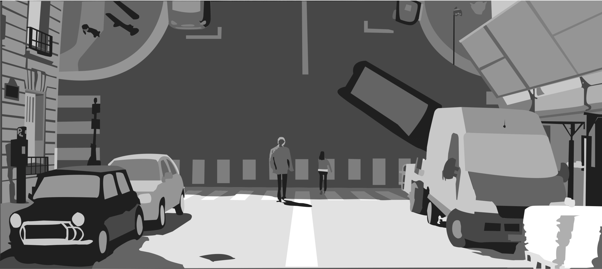
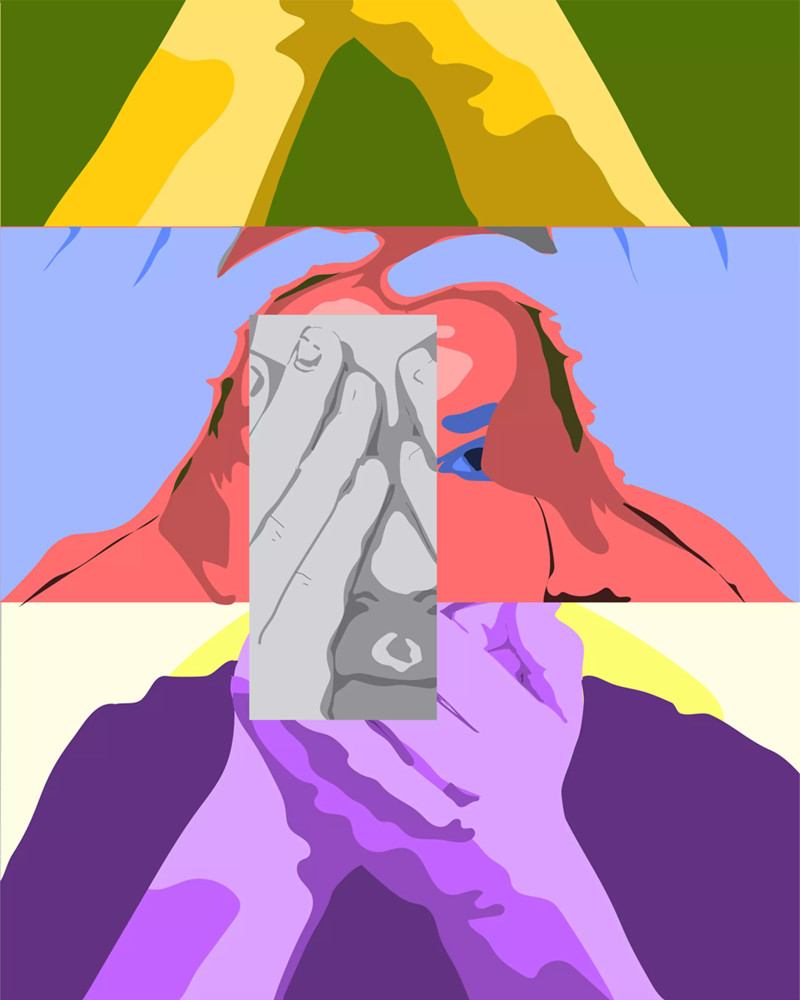
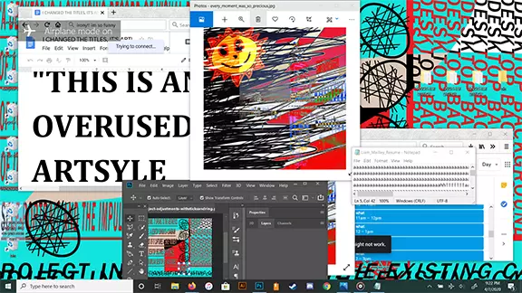
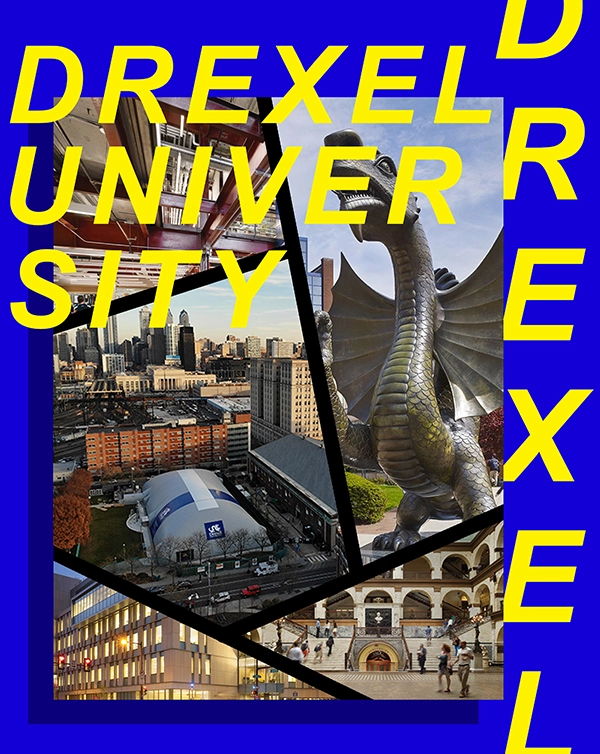

DUCK Clothing
Entire line of duck-themed clothing designed for my little brother. All clothing designs and site setup are by me; you can check it out at duckclothing.storenvy.com.

Four Alarm - Light Pollution Album Cover
Album cover for my upcoming debut album! Stay tuned!
Scene From Inception
Vector-traced movie still, recreated using black, white, and 3 shades of gray in-between.
Pollen
An album cover comissioned by a friend of mine. Features custom typography and photography.
Pop-Art Self Portrait
An assignment for Design II. Created via vector tracing of collaged images.
My Desktop
Eccentric pop-art piece, taken via screenshot of my laptop desktop.
Drexel Collage
Personal piece, experimenting with text, depth, and vibrating edge.